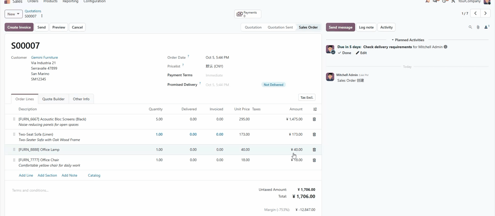
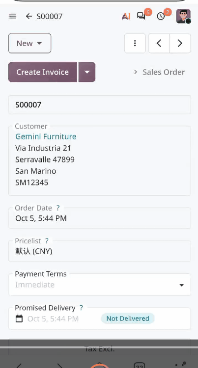

sudo /usr/bin/python3 -m pip install PyMuPDF==1.26.7 --break-system-packages
This module extends Odoo 20 native reporting model ir.actions.report based on PyMuPDF.
It supports PDF generation, high-definition PDF-to-PNG conversion, social OG sharing preview and report action selection popup.
Add 4 output modes for QWeb PDF reports:
Generate PDF on the backend and trigger browser print dialog
Use Odoo native PDF download logic
Preview PDF in a new browser tab
Convert PDF pages to high-resolution PNG images and preview in popup. The page embeds OG meta tags for social sharing cards.
default_print_option to preset report behavior: print / download / open / og_render_safe_render_pdf: Add timeout and file size validation, unified exception capture and log output._pdf_to_png_optimized: Convert PDF binary stream to images directly without temporary disk files. Default 2x scaling and 150 DPI, return base64 strings for all pages. Automatically release documents to avoid handle leakage.fitz_pdf_image(): Frontend ORM call entry with parameter validation, access permission check and exception handling.report_action and _get_readable_fields to pass custom settings to frontend.qweb-pdf report actions; bypass non-PDF reports without breaking original logic.ReportDialogWindow OWL3 popup component, supports ESC key to close./report/get_pdf_engine_state, auto fallback to HTML report preview if PDF engine fails.pymupdf >=1.24 (auto compatible with old fitz import syntax)web, basepip install pymupdf
Go to Settings > Technical > Reports, open QWeb PDF report and set the field Default printing option.
Leave empty to show selection popup every time users click the report.
Click print on document → select OG Render.
Backend renders PDF and converts it to PNG. Popup displays all pages with OG sharing meta information.
Select Print. PDF loads inside hidden iframe then triggers browser print dialog.
If PDF rendering engine is unavailable, system automatically switches to HTML report preview.
qs_pip_pymupdf/ ├── __init__.py ├── __manifest__.py ├── models/ │ └── ir_actions_report.py ├── static/ │ └── src/js/ │ ├── report_handler.js │ └── report_dialog.js ├── views/ │ └── report_assets.xml └── README.rst
Matrix(2.0,2.0) and DPI in _pdf_to_png_optimized. Larger values create bigger base64 payload.